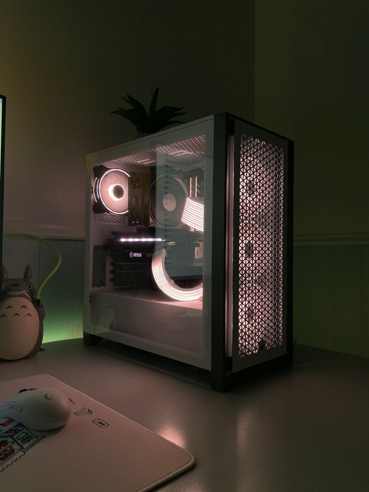
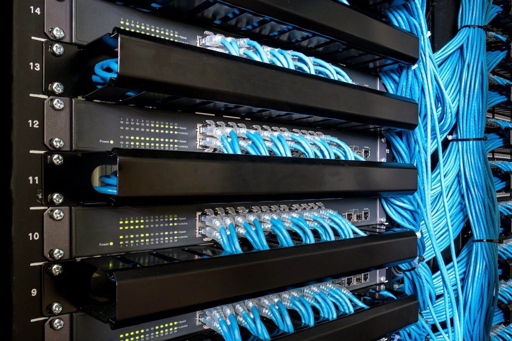

Servicios
PC building
Network Services
Web development
El lugar ideal para tus soluciones en TI.
Ver másHola! Somos JMTech, el lugar ideal en tus soluciones y servicios Informaticos desde 2026. En la actualidad damos servicios a más de 100 usuarios y clientes satisfechos con nuestro trabjo. Contamos con varios ingenieros especializados en areas en concreto para el desarrollo de tus necesidades. Ya sea para tu empresa u hogar. En la actualidad tenemos muchos servicios disponibles para ti. Entre los que se enceuntran:
Necesitas para tu proyecto de oficina o personal equipo de computo? Nosotros te ayudamos. Contamos con la Ingeniería especializada en Hardware que puede elaborar con extito tus proyectos, ya sean para tu trabajo o para tus hobbys. Armamos más de 15 tipos de Computadoras Personales, nos ajustamos a tus necesidades, pasatiempos y presupuesto, si necesitas más información no dudes en contactarnos a través de este medio.

Necesitas una red local estructurada? Nosotros armamos tu site, router, switches, cableado estructurado y organizado. Todo a través de nuestra Ingeniería especializada en redes contamos con las certificaciones necesarias para tu apoyo. Y configuramos tu red local, asignamos IP fijas, un entorno local para que tu empresa se conecte de forma interna y segura. Si necesitas más información mandanos correo por este medio.

Necesitas ayuda con tu pagina web? Si tienes un proyecto personal, y necesitas ayuda para la elaboración de tu pagina web, este es el contacto perfecto para ti. Contamos con desarrolladores web, en frontend y backend para crear tu web 100% funcional. Tienda en linea, paginas de contacto, apps web funcionales y más. Con todo eso te ayudamos. Solo necesitas mandarnos un correo por este medio y nosotros te damos el presupuesto. Garantizamos tu web de calidad.